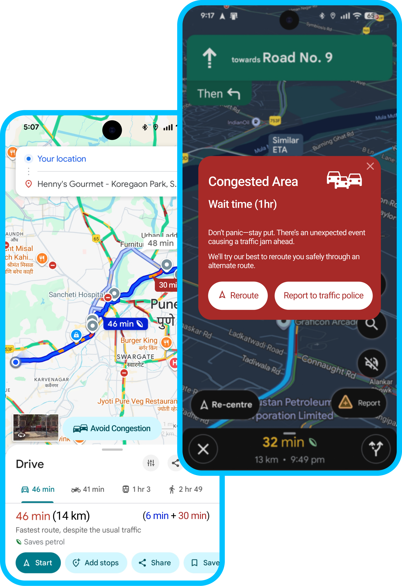
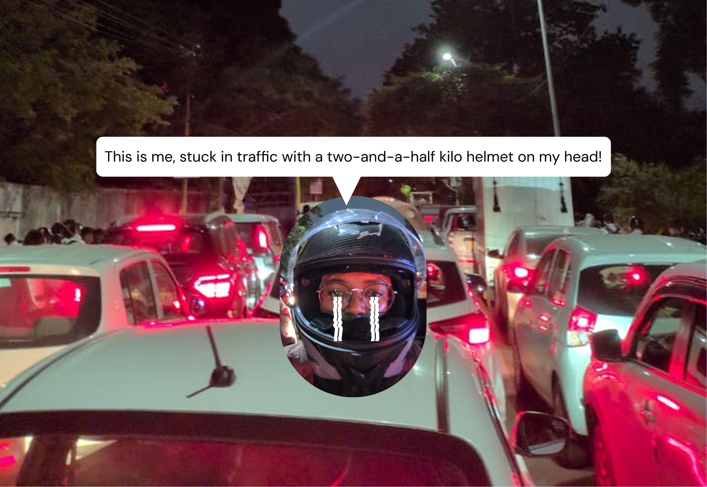
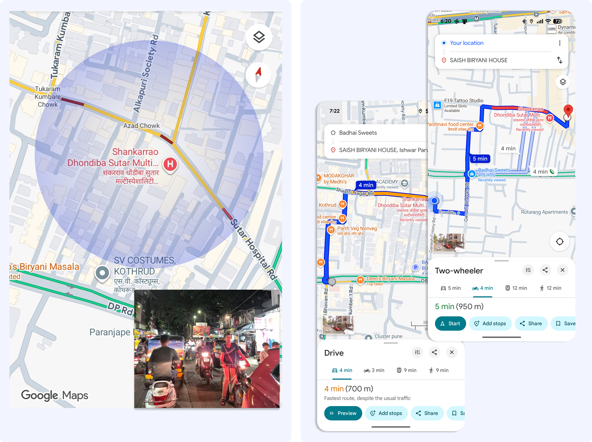
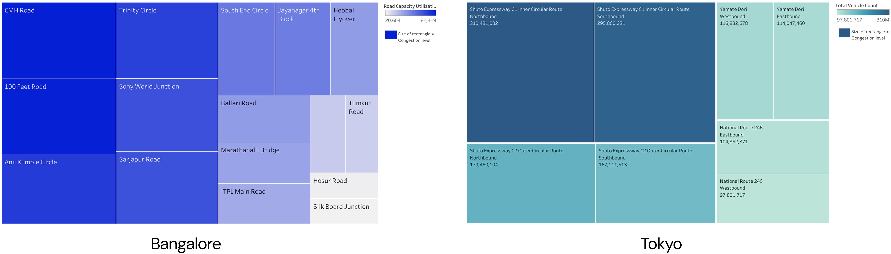
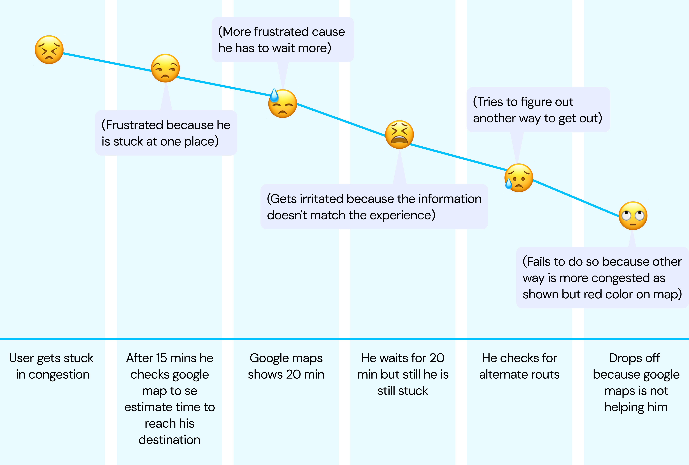
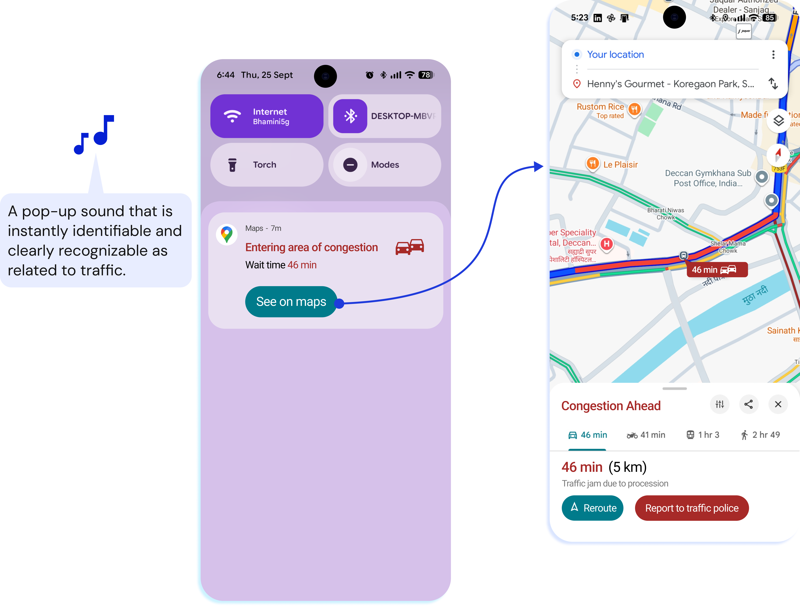
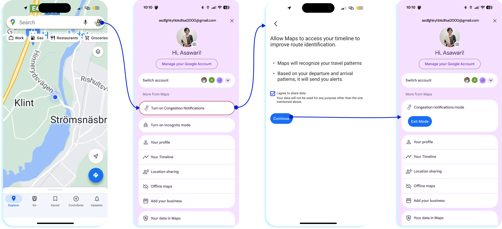
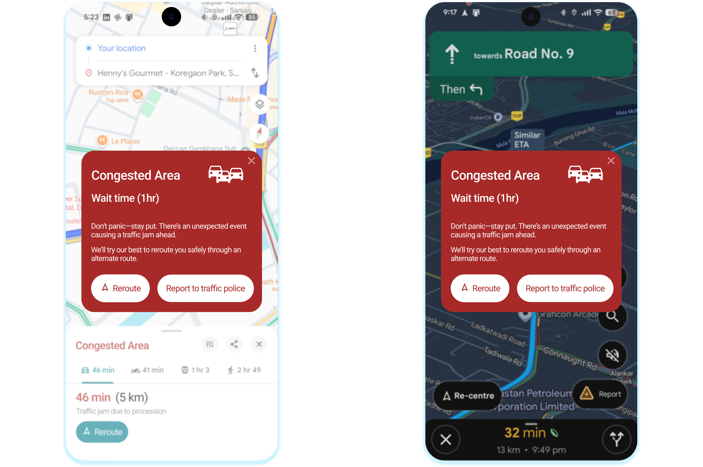
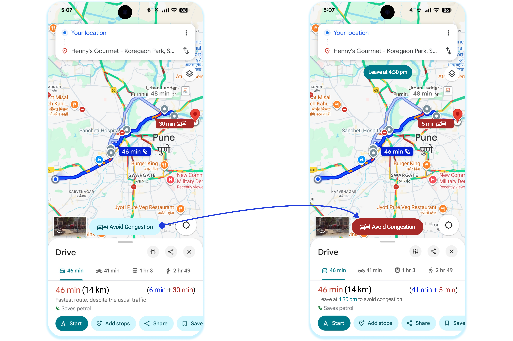

Google Maps tells Indian drivers how long a trip takes. It doesn’t tell them how long they’ll be stuck. This project adds emotional and contextual cues to fix that.

ProjectMaking Google Maps a good navigator
RoleResearch, data analysis, UI design
Duration3 weeks
ToolsFigma, Tableau, Python, Power BI, Google Forms
In short: when drivers get stuck, the app’s estimate stops matching reality, so they get frustrated and stop using it. That removes the very data Maps needs to predict Indian traffic. Suchālak adds three features, for drivers entering a jam, stuck in one, or checking a route, that keep people informed and keep data flowing.
A road network that can’t keep up
In India, traffic estimates often break down because of sudden jams: festivals, accidents, even a fallen light pole blocking a road.
This isn’t just me. It’s all of us, sitting in the same traffic, watching the minutes slip away.

Stuck for over three hours behind a road closure, in a two-and-a-half-kilo helmet. This is where the project started.
What I experience vs. what Maps shows
I took one congested junction in my own area and compared what I know from the road with what Google Maps says.
What I experience
I avoid this area.
Once stuck, it takes at least 20 minutes to get out.
What Maps shows
4–5 minutes, depending on vehicle.
No hint of the chance of getting stuck.
No exact wait time once I’m in the jam.

The same junction, seen from the road and from the app.
Why the estimates fail
I analysed a public Bangalore traffic dataset and compared peak-hour congestion by area with Tokyo. Each rectangle’s size shows its congestion level.

Bangalore (left) is congested in many areas at once. Tokyo (right) spreads congestion more evenly, with about 50% more population.
In Bangalore, congestion hits every area at the same time. There’s rarely a clear road to reroute onto, and the data is harder to capture.
Where drivers give up
I surveyed people on how they navigate a jam and use Maps while stuck, then mapped how their feelings change. 16 people, regular commuters

The journey of a stuck driver. The estimate stops matching reality, and the driver drops off.
High cognitive load causes frustration and drop-offs. Drop-offs create missing data points, and that works against Maps’ predictions in Indian cities.
Making Maps a Suchālak
Suchālak means an efficient guide. Good guidance needs more than directions: it needs to respect how drivers feel in real time. There are three kinds of moments, so there are three flows.
Warn me early, in a way I can’t miss
Alert based on my travel history
A distinct traffic sound and a pop-up for quick recognition


Opt-in flow: the feature uses travel patterns from the user’s timeline, with consent.
Reassure me and show how long I’ll wait
Calm, plain-language message
Estimated wait highlighted
One tap to reroute or report to traffic police

Split my ETA, and tell me when to leave
ETA broken into normal travel time and time in congestion
A “Leave at” suggestion to avoid the jam

How each feature feeds the data
Entering congestionKeeps drivers engaged before the jam, so location and speed data keeps coming.
Stuck in trafficThe report button turns frustration into a live signal for Maps.
Checking a routeShows time in congestion, which makes the estimate trustworthy again.
What I’d do next
Heavily used products shouldn’t be rebuilt when new problems appear. Like a legal system, they should be amended, so changes feel like a natural extension of what people already trust.